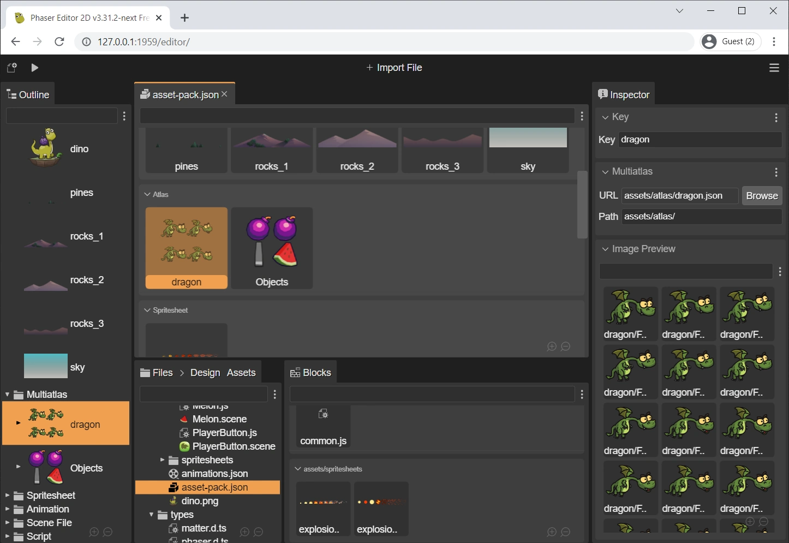

Asset Pack Editor
In a Phaser game, you load the files using the methods of the Phaser.Loader.LoaderPlugin class. This is how you can load a sprite-sheet file:
this.load.spritesheet('bot', 'images/robot.png', { frameWidth: 32, frameHeight: 38 });
You pass a key ('bot') to identify the file in the game cache, the URL of the file ('images/robot.png') and a sprite-sheet configuration object, with other information like the frame size.
Or you can load the file by passing a single argument, a SpriteSheetFileConfig configuration object:
this.load.spritesheet({
key: 'bot',
url: 'images/robot.png',
frameConfig: {
frameWidth: 32,
frameHeight: 38
}
});
Every file type can be loaded using its configuration object, that is just a JSON object. Following this logic, Phaser has a special type of files that contains the configurations of other files: the Asset Pack file.
You can load an Asset Pack file using the pack(...) method of the loader:
this.load.pack("level1", "assets/pack.json");
The Asset Pack Editor allows you to edit an Asset Pack file, making it very easy to load the assets in your game. Instead of spending precious time writing the JSON file by hand, with the Asset Pack Editor you can load your assets with a visual tool and smart operations.
The Asset Pack file is relevant in the IDE for two main reasons:
It is a Phaser built-in format. This means you can create an Asset Pack file with Phaser Editor 2D and use it in any Phaser project, even if you are using another IDE.
The Scene Editor and eventually other tools provided by the IDE are based on Phaser. This means that the IDE can reuse the Asset Pack file information to load the assets into its internal tools.